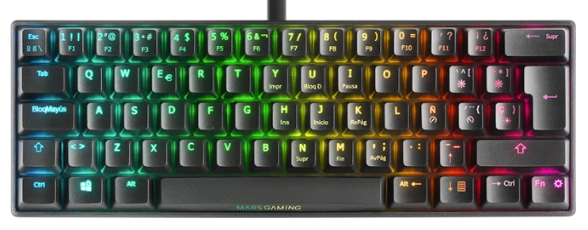
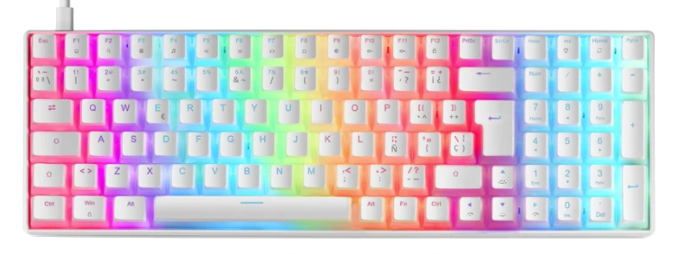
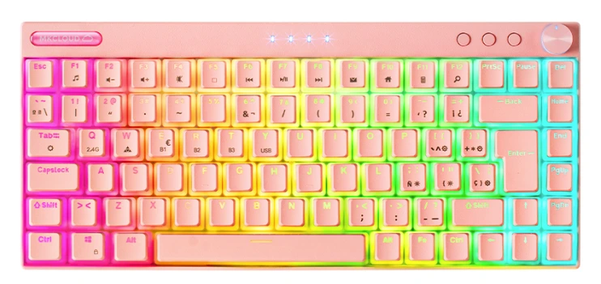
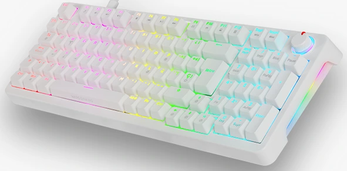

Los Mejores Teclados Mars Gaming de 2025 Probados por un Experto

Contenido actualizado en mayo de 2025
Soy Carlos López, analista con más de 15 años de experiencia probando teclados gaming . En esta guía verás una comparativa real con los mejores modelos de teclados Mars Gaming que he probado personalmente en juegos, trabajo y uso intensivo. Si estás pensando en la marca Mars Gaming para comprar un teclado fiable, económico y con buen rendimiento, esta página es justo lo que necesitas. Esta guía incluye enlaces de afiliado sin coste adicional para ti. Nos ayudan a mantener el sitio actualizado con análisis imparciales.
Si lo que buscas son los mejores teclados gaming de 2025 sin importar la marca, tienes esta otra guia de compra.
Índice de Contenidos
- Comparativa rápida de teclados Mars Gaming recomendados
- ¿Qué es un teclado gaming?
- ¿Por qué deberías comprar un teclado Mars gaming?
- Comparativa real de teclados Mars Gaming
- ¿Cuál compraría yo?
- Preguntas frecuentes
Comparativa rápida de teclados Mars Gaming
| Imagen | Modelo | Lo mejor | A tener en cuenta | Comprar |
|---|---|---|---|---|
 |
Mars Gaming MKXTKL | Switches OUTEMU SQ azules, diseño TKL robusto, reposamuñecas ergonómico, y retroiluminación RGB dinámica | Carece de teclado numérico; óptimo para shooters y setups con poco espacio | Ver en Amazon |
 |
Mars Gaming MKULTRA | Formato 96%, switches OUTEMU SQ rojos silenciosos, teclas PBT pudding, y software para personalización RGB | Diseño compacto pero incluye teclado numérico; ideal para trabajo y juego | Ver en Amazon |
 |
Mars Gaming MK80 | Switches OUTEMU marrones, iluminación RGB ajustable, tamaño TKL y construcción sólida | Buen rendimiento por el precio; sin reposamuñecas ni software de control | Ver en Amazon |
 |
Mars Gaming MKMINIPRO | Formato 60%, switches hot-swap, RGB envolvente y cable USB-C extraíble | Ultracompacto, sin teclas F ni pad numérico; ideal para movilidad | Ver en Amazon |
 |
Mars Gaming MKPRO | Switches hot-swap, RGB Chroma completo, chasis de aluminio y rueda de control multifunción | Una de las opciones más completas para gamers y profesionales exigentes | Ver en Amazon |
|  | Mars Gaming MKMINIBES | Diseño 60% minimalista, switches OUTEMU PRO, retroiluminación RGB personalizable y gran portabilidad | No tiene teclas dedicadas ni pad numérico; pensado para setups reducidos | Ver en Amazon |
 |
Mars Gaming MK60 Rainbow White | Formato 60% blanco, switches mecánicos antipolvo, retroiluminación FRGB vibrante | Estilo visual moderno y limpio; sin funciones multimedia dedicadas | Ver en Amazon |
|  | Mars Gaming MKULTRA Blanco | Versión blanca con switches OUTEMU SQ, teclas PBT pudding y RGB Chroma con software | Ideal para usuarios que quieren estética clara sin perder funcionalidad | Ver en Amazon |
|  | Mars Gaming MKCLOUDPRES | Formato 75% inalámbrico, switches OUTEMU SQ PRO, RGB y diseño rosa único | Conectividad inalámbrica muy cómoda; ideal para setups coloridos o portátiles | Ver en Amazon |
|  | Mars Gaming MKPRO Blanco | Diseño completo en blanco, switches hot-swap, RGB Chroma y rueda de control | Una opción premium con estética clara y funcionalidades completas | Ver en Amazon |
Mars Gaming MKXTKL
Lo mejor: Switches OUTEMU SQ azules, diseño TKL robusto, reposamuñecas ergonómico, y retroiluminación RGB dinámica.
A tener en cuenta: Carece de teclado numérico; óptimo para shooters y setups con poco espacio.
Ver en Amazon
Mars Gaming MKULTRA
Lo mejor: Formato 96%, switches OUTEMU SQ rojos silenciosos, teclas PBT pudding, y software para personalización RGB.
A tener en cuenta: Diseño compacto pero incluye teclado numérico; ideal para trabajo y juego.
Ver en Amazon
Mars Gaming MK80
Lo mejor: Switches OUTEMU marrones, iluminación RGB ajustable, tamaño TKL y construcción sólida.
A tener en cuenta: Buen rendimiento por el precio; sin reposamuñecas ni software de control.
Ver en Amazon
Mars Gaming MKMINIPRO
Lo mejor: Formato 60%, switches hot-swap, RGB envolvente y cable USB-C extraíble.
A tener en cuenta: Ultracompacto, sin teclas F ni pad numérico; ideal para movilidad.
Ver en Amazon
Mars Gaming MKPRO
Lo mejor: Switches hot-swap, RGB Chroma completo, chasis de aluminio y rueda de control multifunción.
A tener en cuenta: Una de las opciones más completas para gamers y profesionales exigentes.
Ver en AmazonMars Gaming MKMINIBES
Lo mejor: Diseño 60% minimalista, switches OUTEMU PRO, retroiluminación RGB personalizable y gran portabilidad.
A tener en cuenta: No tiene teclas dedicadas ni pad numérico; pensado para setups reducidos.
Ver en Amazon
Mars Gaming MK60 Rainbow White
Lo mejor: Formato 60% blanco, switches mecánicos antipolvo, retroiluminación FRGB vibrante.
A tener en cuenta: Estilo visual moderno y limpio; sin funciones multimedia dedicadas.
Ver en AmazonMars Gaming MKULTRA Blanco
Lo mejor: Versión blanca con switches OUTEMU SQ, teclas PBT pudding y RGB Chroma con software.
A tener en cuenta: Ideal para usuarios que quieren estética clara sin perder funcionalidad.
Ver en AmazonMars Gaming MKCLOUDPRES
Lo mejor: Formato 75% inalámbrico, switches OUTEMU SQ PRO, RGB y diseño rosa único.
A tener en cuenta: Conectividad inalámbrica muy cómoda; ideal para setups coloridos o portátiles.
Ver en AmazonMars Gaming MKPRO Blanco
Lo mejor: Diseño completo en blanco, switches hot-swap, RGB Chroma y rueda de control.
A tener en cuenta: Una opción premium con estética clara y funcionalidades completas.
Ver en Amazon¿Qué es un Teclado Gaming?
Un teclado gaming no es simplemente un teclado con luces. Se trata de dispositivos diseñados pensando en la precisión, la velocidad de respuesta y la resistencia. Cuando estás en medio de una partida, cada milisegundo cuenta, y un buen teclado puede ser la diferencia entre ganar o perder. Como gamer y analista, valoro mucho que un teclado gaming responda de forma rápida, cómoda y fiable.
¿Por qué deberías comprar un teclado de la marca Mars gaming?
- ✅ Un teclado Mars Gaming ofrece gran rendimiento sin gastar de más.
- 🎮 Cada teclado de la marca Mars Gaming está diseñado para gaming: rápidos, precisos y duraderos.
- 🔧 Hay teclados Mars Gaming para todos los gustos: desde modelos compactos hasta completos con macros y RGB.
- 🔄 Si buscas un teclado mecánico Mars Gaming , tienes opciones con switches OUTEMU, hot-swap y formatos TKL o 60%.
- 💸 Los teclados Mars Gaming destacan por su increíble relación calidad-precio.
- 🧠 Son ideales tanto para jugar como para trabajar , gracias a su ergonomía y buen tacto.
Comparativa real de los mejores teclados Mars Gaming de 2025 (probados en juegos reales)
Mars Gaming MKXTKL
⭐ Valoración del experto: 4/5
He probado el Mars Gaming MKXTKL durante varias sesiones de juego y ha superado mis expectativas. Su diseño compacto TKL me permitió mover el ratón con mayor libertad, algo esencial en shooters. Los switches OUTEMU SQ ofrecen una respuesta nítida y rápida, muy útil en situaciones de presión. El teclado se siente firme sobre la mesa, sin deslizamientos, y la iluminación RGB es sobria pero efectiva. Además, el reposamuñecas desmontable mejora el confort durante sesiones largas sin añadir volumen innecesario.
Principales características:
- Diseño TKL ultra-compacto que optimiza el espacio en tu escritorio.
- Switches mecánicos OUTEMU SQ que ofrecen una respuesta rápida y precisa.
- Retroiluminación RGB con 10 perfiles de luz predefinidos para personalizar tu ambiente de juego.
- Estructura de ABS que garantiza durabilidad y resistencia al uso intensivo.
- Incluye reposamuñecas ergonómico para mayor comodidad durante largas sesiones.
Mars Gaming MKULTRA
⭐ Valoración del experto: 5/5
El Mars Gaming MKULTRA lo he usado tanto para trabajo como para gaming y se comporta muy bien en ambos casos. Su formato 96% conserva el teclado numérico sin ocupar tanto espacio como uno full-size. Los switches son agradables al tacto, con una pulsación silenciosa y estable. El reposamuñecas incluido mejora bastante la postura en sesiones largas. La iluminación RGB es intensa gracias a las teclas PBT Pudding, y el software permite muchas opciones de personalización.
Principales características:
- Formato full-compacto al 96% que combina funcionalidad completa en un diseño compacto.
- Switches OUTEMU SQ anti-polvo que prolongan la vida útil del teclado.
- Teclas PBT Pudding de doble inyección que ofrecen una experiencia de escritura superior.
- Iluminación RGB CHROMA con efectos personalizables para un estilo único.
- Conexión USB-C desmontable que facilita el transporte y la organización del cableado.
Mars Gaming MK80
⭐ Valoración del experto: 4.5/5
He utilizado el MK80 durante varios días y me ha parecido una opción muy sólida para quienes buscan buen rendimiento a bajo coste. Su tamaño TKL es ideal si necesitas más espacio para el ratón. Los switches ofrecen una pulsación mecánica firme, sin excesivo ruido. La iluminación RGB se puede ajustar fácilmente con combinaciones de teclas. En general, ofrece una experiencia mecánica bastante completa para su rango de precio.
Principales características:
- Diseño TKL compacto que ahorra espacio sin sacrificar funcionalidades esenciales.
- Switches mecánicos OUTEMU que proporcionan una pulsación precisa y satisfactoria.
- Iluminación RGB con 12 efectos dinámicos que mejoran la estética de tu setup.
- Teclas de doble inyección que aseguran una mayor durabilidad y resistencia al desgaste.
- Función anti-ghosting avanzada que permite pulsaciones simultáneas sin errores.
Mars Gaming MKMINIPRO
⭐ Valoración del experto: 4/5
He probado el MKMINIPRO en un entorno de escritorio minimalista y también como teclado portátil. Su diseño 60% ayuda a liberar espacio y resulta cómodo de transportar. Los switches hot-swap permiten personalizar la experiencia sin herramientas. Pese a su tamaño, la construcción es muy sólida y estable. Su iluminación RGB dinámica es vibrante y configurable, ideal para setups llamativos.
Principales características:
- Formato ultra-compacto al 60% ideal para espacios reducidos y fácil transporte.
- Switches mecánicos hot-swappable que permiten personalizar la experiencia de escritura.
- Iluminación RGB completa con efectos en la parte trasera y lateral para un diseño envolvente.
- Cable USB-C desmontable que facilita la conexión y organización del escritorio.
- Teclas de doble inyección que ofrecen una mayor resistencia y tacto mejorado.
Mars Gaming MKPRO
⭐ Valoración del experto: 5/5
Tras varios días de uso intensivo con el MKPRO, puedo confirmar que es un teclado robusto y fiable. Los switches mecánicos ofrecen una pulsación precisa, ideal tanto para gaming como para tareas de escritura. La carcasa de aluminio transmite una gran sensación de calidad. Además, la retroiluminación RGB es completamente configurable y muy brillante. En mi experiencia, es una opción muy completa para quienes buscan un teclado profesional sin gastar una fortuna.
Principales características:
- Diseño completo con todas las teclas necesarias para una experiencia de escritura óptima.
- Switches mecánicos hot-swap que permiten cambiar los interruptores sin soldadura.
- Iluminación RGB CHROMA personalizable para adaptar el teclado a tu estilo.
- Rueda de control multifunción que facilita el ajuste de volumen y otras funciones.
- Software avanzado para la configuración de macros y personalización de teclas.
Mars Gaming MKMINIBES
⭐ Valoración del experto: 4/5
He estado utilizando el MKMINIBES durante mis sesiones de juego y trabajo, y su diseño ultra-compacto al 60% ha sido una ventaja para mantener un escritorio ordenado. Los switches mecánicos OUTEMU PRO ofrecen una respuesta precisa y una durabilidad notable. La iluminación RGB es vibrante y personalizable, lo que añade un toque estético a mi setup. Además, su construcción sólida transmite confianza en su uso diario.
Principales características:
- Diseño ultra-compacto al 60% para optimizar el espacio.
- Switches mecánicos OUTEMU PRO de alta precisión.
- Iluminación RGB personalizable con múltiples efectos.
- Construcción robusta para una mayor durabilidad.
- Ideal para setups minimalistas y portabilidad.
Mars Gaming MK60 Rainbow White
⭐ Valoración del experto: 4.5/5
El MK60 Rainbow White ha sido una grata sorpresa. Su formato ultra-compacto al 60% es perfecto para espacios reducidos sin sacrificar funcionalidad. Los switches mecánicos proporcionan una experiencia de escritura fluida y precisa. La iluminación FRGB Rainbow es intensa y añade un toque llamativo al escritorio. Su diseño en blanco le da un aspecto limpio y moderno.
Principales características:
- Formato ultra-compacto al 60% para máxima eficiencia.
- Switches mecánicos para una respuesta táctil precisa.
- Iluminación FRGB Rainbow con efectos dinámicos.
- Diseño en blanco para un estilo elegante.
- Construcción de alta calidad para uso prolongado.
Mars Gaming MKULTRA Blanco
⭐ Valoración del experto: 5/5
El MKULTRA Blanco ha sido una excelente adición a mi equipo. Su formato full-compact al 96% ofrece todas las teclas necesarias en un diseño más compacto. Los switches OUTEMU SQ marrones brindan una pulsación suave y silenciosa, ideal para largas sesiones de escritura o juego. La iluminación RGB es brillante y se puede personalizar fácilmente. Su acabado en blanco le da un toque sofisticado.
Principales características:
- Diseño full-compact al 96% para funcionalidad completa.
- Switches OUTEMU SQ marrones para una pulsación suave.
- Iluminación RGB personalizable con software dedicado.
- Acabado en blanco para un estilo moderno.
- Construcción sólida y duradera.
Mars Gaming MKCLOUDPRES
⭐ Valoración del experto: 4.5/5
El MKCLOUDPRES destaca por su conectividad inalámbrica y diseño compacto al 75%. Los switches OUTEMU SQ PRO rojos ofrecen una respuesta rápida y lineal, ideal para juegos que requieren velocidad. La iluminación RGB es vibrante y se sincroniza bien con otros dispositivos. Su diseño en rosa añade un toque único y atractivo.
Principales características:
- Conectividad inalámbrica para mayor libertad de movimiento.
- Formato compacto al 75% con todas las teclas esenciales.
- Switches OUTEMU SQ PRO rojos para respuesta rápida.
- Iluminación RGB personalizable y sincronizable.
- Diseño en rosa para un estilo distintivo.
Mars Gaming MKPRO Blanco
⭐ Valoración del experto: 5/5
El MKPRO Blanco es una opción premium que combina estética y rendimiento. Su diseño completo ofrece todas las funcionalidades necesarias para profesionales y gamers. Los switches mecánicos hot-swap permiten personalizar la experiencia de escritura. La iluminación RGB Chroma es intensa y totalmente configurable. Su acabado en blanco le da un aspecto elegante y profesional.
Principales características:
- Diseño completo con todas las teclas y funciones esenciales.
- Switches mecánicos hot-swap para personalización.
- Iluminación RGB Chroma totalmente configurable.
- Acabado en blanco para un estilo sofisticado.
- Construcción robusta y duradera para uso intensivo.
¿Cuál compraría yo? El mejor teclado calidad/precio
Después de probar a fondo todos los teclados Mars Gaming de esta lista, personalmente me quedo con el Mars Gaming MKPRO. Me ha convencido por su equilibrio perfecto entre rendimiento, durabilidad y estética. Sus switches mecánicos son muy precisos, la estructura de aluminio le da una solidez premium, y la retroiluminación es realmente personalizable. Si quieres algo serio para jugar y trabajar, sin duda es una apuesta segura.
⌨️ Ver oferta actual en Amazon - Negro ⌨️ Ver oferta actual en Amazon - BlancoPreguntas Frecuentes (FAQ)
¿Dónde comprar un teclado con garantía?
Recomendamos comprar en Amazon porque ofrece garantía oficial, envíos rápidos, y muchas veces tiene ofertas con envío gratuito. Además, puedes devolver el producto fácilmente si no estás satisfecho.
¿Puedo usar un teclado gaming para trabajar también?
Totalmente. Muchos de sus modelos tienen diseños profesionales y switches cómodos que funcionan bien tanto para jugar como para escribir durante horas.
¿Son ruidosos los teclados Mars Gaming?
Depende del modelo. Algunos tienen switches más silenciosos, mientras que otros están diseñados para ofrecer una respuesta táctil más sonora.
¿Cuál es el teclado de la comparativa más compacto?
El MKMINIPRO, con formato 60%, es perfecto si buscas ahorrar espacio o si necesitas un teclado portátil sin perder funcionalidades.
⌨️ Comprar Mars Gaming MKMINIPRO en Amazon¿Son buenos los Mars Gaming para juegos competitivos?
Sí. Modelos como el MKPRO o MKMINIPRO ofrecen una respuesta muy rápida y una gran precisión, ideales para juegos como Valorant, CS2 o Fortnite.
⌨️ Comprar Mars Gaming MKMINIPRO en Amazon ⌨️ Comprar Mars Gaming MKPRO en Amazon¿Qué ventajas tienen los teclados Mars Gaming?
Los teclados Mars Gaming ofrecen una gran relación calidad-precio, con funciones avanzadas como retroiluminación RGB, diseños compactos y switches mecánicos fiables.
¿Qué teclado Mars Gaming es el más completo en 2025?
Si estás buscando un teclado que ofrezca buena construcción, iluminación RGB, y switches mecánicos fiables, el modelo MKPRO destaca por su equilibrio entre calidad y precio.
⌨️ Comprar Mars Gaming MKPRO en Amazon¿Qué ventajas tienen los teclados Mars Gaming frente a otras marcas?
Los teclados Mars Gaming ofrecen funciones que suelen encontrarse en gamas más altas, como diseño compacto, personalización de iluminación y switches mecánicos por un precio asequible. Son ideales si quieres rendimiento sin gastar de más.
¿Cuál es el mejor teclado mecánico Mars Gaming para jugar?
Entre los modelos disponibles, el teclado mecánico Mars Gaming MKULTRA es ideal para quienes buscan un formato compacto con buena ergonomía y switches silenciosos. También el MKPRO destaca por su pulsación firme y carcasa de aluminio.
⌨️ Comprar Mars Gaming MKULTRA en Amazon ⌨️ Comprar Mars Gaming MKPRO en AmazonConclusión: ¿Qué teclado Mars Gaming comprar en 2025?
Después de analizar a fondo cada teclado, queda claro que la marca ofrece opciones de calidad para todo tipo de usuarios. Ya busques un modelo compacto, uno profesional o un diseño 60%, siempre encontrarás un Mars Gaming teclado que se ajuste a tus necesidades.
La variedad de Mars Gaming teclados permite elegir según tu estilo de juego o espacio disponible. Si prefieres una experiencia premium, el MKPRO es ideal; si buscas portabilidad, el MKMINIPRO es excelente.
Además, si lo que necesitas es un teclado mecánico Mars Gaming , hay varias opciones con switches OUTEMU y RGB configurable, tanto en formato TKL como full-size.
En resumen, los teclados Mars Gaming destacan por su relación calidad-precio, diseño atractivo y rendimiento probado. Sea cual sea tu caso, esta guía te ayudará a encontrar el mejor Mars Gaming teclado para ti.